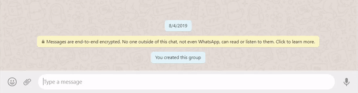
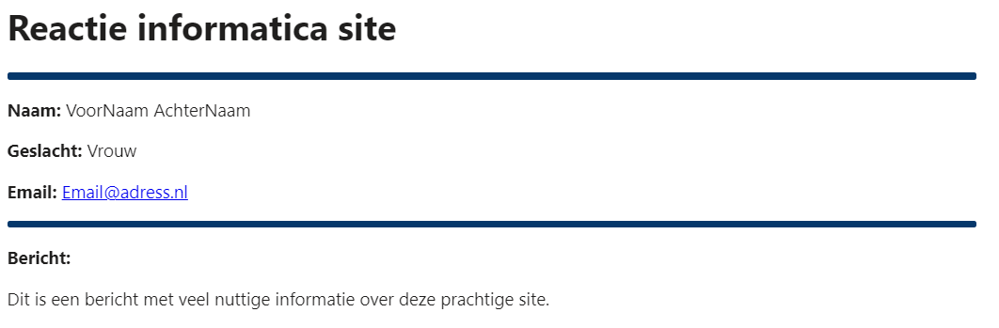

Voor de docent die mijn site gaat nakijken lees deze pagina goed door alstublieft. Alle javascript en php is door mij zelf geschreven en niks is gekopieerd, ik heb alleen soms gebruik gemaakt van w3schools of stackoverflow.
In deze site zit een wachtwoord generator, hierbij kan je kiezen hoe lang het wachtwoord moet worden en kun je aanvinken welke tekens/symbolen in je wachtwoord wilt. Het genereert het wachtwoord met een door mij geschreven javascript code, hieronder zie je de code. Deze hele javascript code van de wachtwoord generator is door mij geschreven en bedacht en er is niks gejat.
/* Dit maakt een aantal variabelen aan die later gebruikt kunnen worden. */
var slider = document.getElementById("aantalTekensSlider");
var aantalTekens = document.getElementById("aantalTekens");
var wachtwoordOut = document.getElementById("wachtwoord");
aantalTekens.innerHTML = slider.value;
/* Dit zorgt ervoor dat de waarde van de slider afgedrukt wordt op het scherm */
aantalTekensSlider.oninput = function() {
aantalTekens.innerHTML = this.value;
}
/* Dit zorgt ervoor dat het wachtwoord gekopieerd word. */
function kopieerWachtwoord() {
var copyText = document.getElementById("wachtwoord");
copyText.select();
copyText.setSelectionRange(0, 16)
document.execCommand("copy");
alert('Wachtwoord gekopieerd');
}
/* Dit genereert het wachtwoord. */
function maakWachtwoord() {
var tekens = ''
if (document.getElementById("kleineLettersCheck").checked == true) {
var kleineLetters = 'qwertyuiopasdfghjklzxcvbnm';
tekens = tekens.concat(kleineLetters);
}
if (document.getElementById("groteLettersCheck").checked == true) {
var groteLetters = 'QWERTYUIOPASDFGHJKLZXCVBNM';
tekens = tekens.concat(groteLetters);
}
if (document.getElementById("cijfersCheck").checked == true) {
var cijfers = '1234567890';
tekens = tekens.concat(cijfers);
}
if (document.getElementById("symbolenCheck").checked == true) {
var symbolen = '!@#$%^&*';
tekens = tekens.concat(symbolen);
}
var wachtwoord = '';
var tekensLengte = tekens.length;
for ( var i = 0; i < slider.value; i++ ) {
wachtwoord += tekens.charAt(Math.floor(Math.random() * tekensLengte));
}
wachtwoordOut.value = wachtwoord;
}
Ik heb via het .htacces bestand een 404 pagina gemaakt, wanneer iemand dus een ongeldige url invult binnen mijn site word je doorverwezen naar de 404 pagina. ga bijvoorbeeld naar deze url http://informatica.lvo-weert.nl/~midas.n/ditbestaatniet deze url binnen mijn site bestaat niet en je wordt dus doorverwezen. Om dit te laten werken in je site moet een bestand maken in hetzelfde mapje als je index, dit bestand moet precies '.htacces' heten. In dit bestand zet je onderstaande code maar vervang je de url met jou 404 url. Dan moet je wel nog een bestand maken die '404.html' heet.
ErrorDocument 404 http://informatica.lvo-weert.nl/~midas.n/404
Ik heb er voor gezorgd dat de site wanneer je hem opstart naar een variabel in de url zoekt, het variabel heet pagina. Wanneer het variabel niet ingesteld is ga je naar de home pagina, wanneer hij wel bestaat heeft hij een waarde van 1, 2, of 3 en dit verteld de site dus welke pagina het is. Dit zorgt er dus voor dat je de site met iemand kunt delen en dan laadt hij gelijk de correcte subpagina in. Wat onderstaande code dus doet is; wanneer de site geladen word kijkt hij of het variabel 'pagina' in de url zit, zo ja kijk hij welke waarde het heeft, wanneer het dan bijvoorbeeld de waarde 2 heeft voert hij een javascript functie uit die de iframe aanpast.
<?php
if (isset($_GET['pagina'])) {
if ($_GET['pagina'] == '2') {
echo "<script>setIFrame(path='subpaginas/subPagina2.html')</script>";
}
if ($_GET['pagina'] == '3') {
echo "<script>setIFrame(path='subpaginas/subPagina3.html')</script>";
}
if ($_GET['pagina'] == '4') {
echo "<script>setIFrame(path='subpaginas/subPagina4.php')</script>";
}
} else {
echo "<script>setIFrame(path='subpaginas/subPagina1.html')</script>";
}
?>
function setIFrame(path) {
document.getElementById('iframeSubPages').src = path;
}
Wanneer de iframe een andere pagina inlaad kijkt hij naar de scroll hoogte van dat bestand en maakt de iframe even hoog zodat je niet en in de iframe hoeft de scrollen en op de echte site, dan heb je 2 scrollbars en is het niet heel fijn om doorheen te scrollen. Deze feature zorgt er voor dat de site veel smoother voelt om er door heen te gaan. Elke keer wanneer de iframe geladen wordt wordt onderstaande functie uitgevoerd.
function iframeHeight(obj) {
obj.style.height = obj.contentWindow.document.documentElement.scrollHeight + 'px';
}
Ik heb een icoon toegevoegd aan de website dus je zit bovenaan bij je tabjes een mooi icoontje. Wanneer je in de 404 pagina terecht komt is dit icoontje veranderd naar een vraagteken.
<!-- dit zorgt er voor dat het icoontje geladen word --> <link rel="icon" type="image/x-icon" href="/~midas.n/fotos/standaardIcon.ico"> <!-- Of dit wanneer het de 404 pagina is --> <link rel="icon" type="image/x-icon" href="/~midas.n/fotos/404Icon.ico">
Ik heb er voor gezorgd tot wanneer je de link van de site deelt dat er op verschillende chat platformen een preview van de site ontstaat. Hieronder zie je hoe dit gedaan is en een voorbeeld op whatsapp. Ook wanneer je een een andere subpagina deelt met iemand maakt hij gebruik van php om de juiste beschrijving van de website weer te geven.
<meta property="og:type" content="website">
<meta property="og:title" content="Midas" />
<meta property="og:url" content="http://informatica.lvo-weert.nl/~midas.n/" />
<meta property="og:image" content="/fotos/tumbnail.png" />
<meta name="theme-color" content="#5CDB95">
<?php
if (isset($_GET['pagina'])) {
if ($_GET['pagina'] == '2') {
echo "<meta property='og:description' content='Wesbite school, Midas Nies H4F. Wachtwoord generator' />";
}
if ($_GET['pagina'] == '3') {
echo "<meta property='og:description' content='Wesbite school, Midas Nies H4F. Features ' />";
}
if ($_GET['pagina'] == '4') {
echo "<meta property='og:description' content='Wesbite school, Midas Nies H4F. Contact formulier' />";
}
} else {
echo "<meta property='og:description' content='Wesbite school, Midas Nies H4F.' />";
}
?>

Ik een contact formulier gemaakt zoals er staat in de eisen via php. Wanneer iemand reageert op dit formulier krijg ik een mooie html mail die er als volgt uitziet. Hieronder kun je ook de php code zien die de mail verzendt. Ook heb ik er voor gezorgd tot je het formulier maar een keer per 12 uur in kan vullen, dit heb ik gedaan door gebruikt te maken van cookies. Je kunt helaas wel je cookies wissen en hem blijven inleveren maar dit is de beste oplossing om spam tegen te gaan wanneer je geen gebruik kunt maken van een database.
<?php
if (isset($_POST['verstuur'])) {
$cookie_name = "formulierIngevuld";
if(!isset($_COOKIE[$cookie_name])) {
$ontvanger = "PV143938@leerling.pvanhorne.nl";
$voorNaam = $_POST['voorNaam'];
$achterNaam = $_POST['achterNaam'];
$geslacht = $_POST['geslacht'];
$onderwerp = "Reactie formulier informatica site";
$headers = 'MIME-Version: 1.0' . "\r\n";
$headers .= 'Content-type: text/html; charset=iso-8859-1' . "\r\n";
$email = $_POST['email'];
$bericht = wordwrap($_POST['bericht'],70);
$message = '<html>';
$message .= '<head>';
$message .= '<style>';
$message .= 'hr {';
$message .= 'border: 3px solid #05386B;';
$message .= 'border-radius: 2px;';
$message .= 'margin: 5px 0px;';
$message .= 'background-color: #05386B;';
$message .= '}';
$message .= '</style>';
$message .= '</head>';
$message .= '<body>';
$message .= '<h1>Reactie informatica site</h1>';
$message .= '<hr>';
$message .= '<p><b>Naam: </b>' . $voorNaam . ' ' . $achterNaam . '</p>';
$message .= '<p><b>Geslacht: </b>' . $geslacht . '</p>';
$message .= "<p><b>Email: </b> <a href='mailto:" . $email . "'>" . $email . "</a></p>";
$message .= '<hr>';
$message .= '<p><b>Bericht:</b></p>';
$message .= '<p>' . $bericht . '</p>';
$message .= '</body>';
$message .= '</html>';
mail($ontvanger,$onderwerp,$message,$headers);
$cookie_value = "1";
setcookie($cookie_name, $cookie_value, time()+3600, "/");
echo '<script>alert("Verzonden!")</script>';
} else {
echo '<script>alert("U kunt het formulier maar een keer per uur inleveren.")</script>';
}
}
?>
